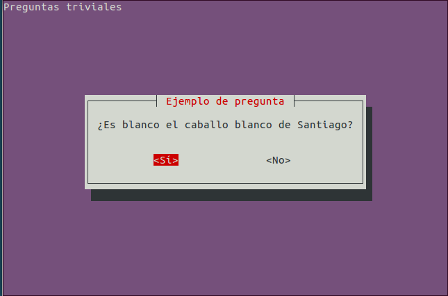
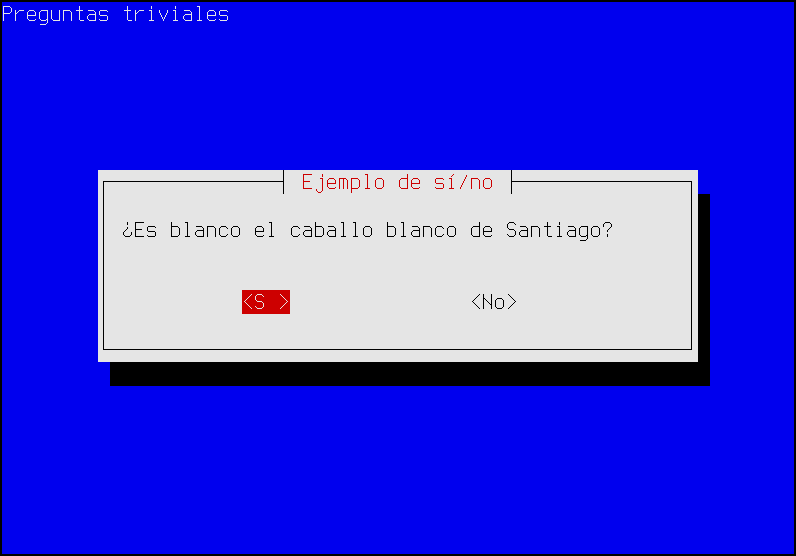
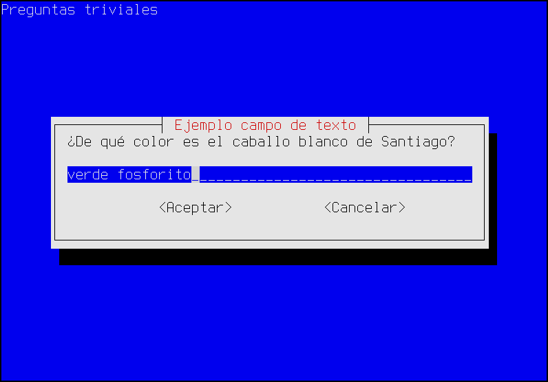
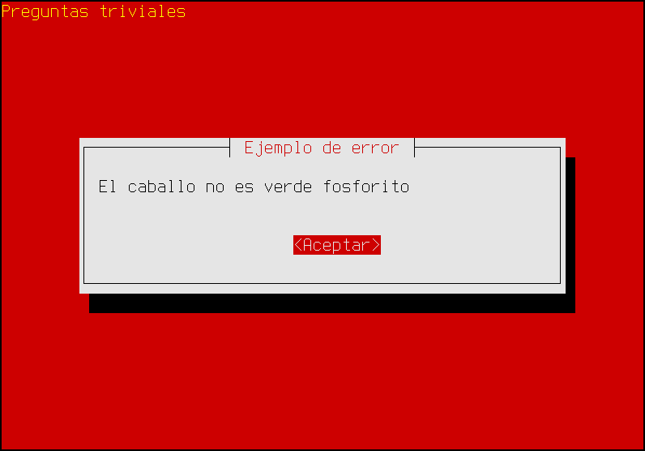
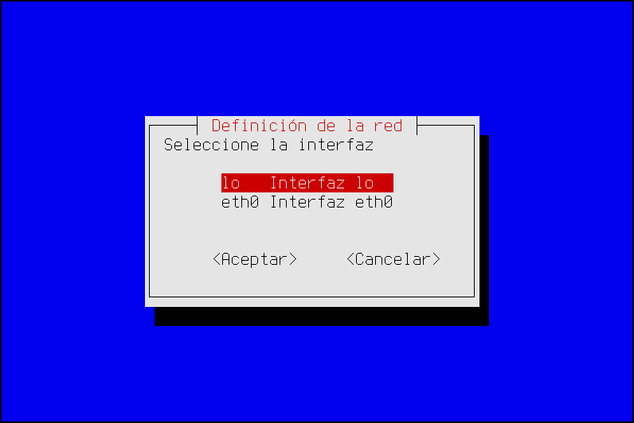

3.6.6. Script molones¶
Hay scripts que requieren la asistencia interactiva del usuario, ya que éste debe alimentar con datos al programa. Dicho de otra forma, scripts en los que el usuario debe contestar preguntas.
3.6.6.1. Conceptos básicos¶
Para estos casos la orden interna de bash es read, pero si nos hemos fijado en los scripts de configuración de los paquetes de debian, habremos podido comprobar que éstos usan una interfaz de texto atractiva, donde hay menús, listas de selección, etc. Tal interfaz se contruye con un programa llamado whiptail[1], bastante sencillo de usar y que, obviamente, está instalado por defecto en la más mínima instalación de una distribucion basada en debian. Gracias a él, puede crearse un script en que nuestras preguntas al usuario tenga este aspecto:
Advertencia
Obviamente, una interfaz de este tipo sólo es adecuada cuando el script se usa interactivamente. Si la operación se presta a ser repetida y desasistida, como por ejemplo, un script para dar de alta usuarios con unas determinadas características, entonces es preferible construir un script cuyos datos se proporcionen a través de argumentos en línea, los cuales permiten su ejecución por lotes[2].
whiptail no se limita a permitir preguntas del sí o no, sino que tiene una amplia gama de posibilidades que, por lo general, cubrirán todas nuestras necesidades:
- Pregunta sí/no (
--yesno). - Mensaje informativo con confirmación (
--msgbox). - Mensaje informativo con temporización (
--infobox)[3]. - Muestra de archivo (
--textbox). - Pregunta con respuesta (
--inputbox). - Petición de contraseña (
--passwordbox). - Menú de selección (
--menu). - Lista de selección múltiple (
--checklist). - Lista de selección única (
--radiolist). - Barra de progresión (
--gauge).
Advertencia
No trataremos en el texto cómo usar cada opción(vea nota [4] para algunos tutoriales), ya que hay innumerable información en internet para romper el hielo. Lo que sí haremos es exponer algunos trucos de uso ajenos al manual y que se echan en falta en muchos tutoriales.
Por tanto, eche un vistazo primero al uso trivial en alguno de estos tutoriales y, cuando entienda cómo meterle mano a whiptail, vuelva a la lectura de este documento.
3.6.6.2. Captura de datos¶
De todas las posibilidades ya referidas, podemos distinguir tres grupos:
- Los diálogos que dan información, pero de los que no se obtienen información: gauge[5], msgbox e infobox.
- El diálogo yesno que devuelve verdadero o falso.
- El resto de diálogos que devuelven distintos valores.
Como los dos últimos grupos obtienen información que el script debe procesar, es importante saber cómo recogerla. En el segundo grupo, esto:
se trataría así:
whiptail --backtitle "Preguntas triviales" --title "Ejemplo de sí/no" \
--yesno "¿Es blanco el caballo blanco de Santiago?" 8 50
case $? in
0) echo "Ha respondido que sí";;
1) echo "Ha respondido que no";;
255) echo "Se ha cancelado la respuesta";;
wsac
es decir, la respuesta se refleja en el código de respuesta de whiptail:
- 0 para «sí».
- 1 para «no».
- 255 si se cancela la entrada de datos con ESC.
En cambio, en el otro grupo, la información que pedimos no puede devolverse en forma de código numérico:
La respuesta para este caso es claramente una cadena y para el caso de la respuesta a un diálogo de selección (como menu o checklist) también lo es, porque cada ítem se asocia a una etiqueta y es la etiqueta lo que se devuelve. Por este motivo, en estos caso el código de respuesta sólo informa de:
- Si se respondió devolviendo un 0.
- Si no se respondió porque se usó el botón de «Cancelar», devolviendo un 1.
- Si no se respondión porque se pulsó ESC, devolviendo 255.
En estos caso, qué se respondió exactamente se devuelve por la salida de errores, ya que la salida estándar se usa para pintar el cuadro de diálogo. Por ello, la forma más cómoda de capturar los datos es intercambiar la salida estándar por la salida de errores, ya que esta última también es la pantalla. De este modo, seguiremos viendo el diálogo y, a la vez, podremos usar una subshell para capturar el dato. O sea, que el cuadro anterior podemos tratarlo así:
resp=$(whiptail --backtitle "Preguntas triviales" --title "Ejemplo campo de texto" \
--inputbox "¿De qué color es el caballo blanco de Santiago?" 8 53 "verde fosforito" 3>&1 1>&2 2>&3)
case $? in
0)
echo "El color es $resp."
;;
1)
echo "¿Cancela? ¿No se atreve a responder?"
;;
255)
echo "¿Pulsa ESC? Eso es de cobardes"
esac
3.6.6.3. Colores¶
whiptail controla los colores a través de las variables de ambiente
NEWT_COLORS_FILE y NEWT_COLORS. La primera permite indicar un fichero en
el que se hayan definido los colores y la segunda escribir directamente los
colores en el valor. Tanto si se escriben las definiciones en fichero como si se
escriben en la variable, éstas deben ser hechas así:
elemento_a_colorear=color_texto,color_fondo
y separar estas definiciones (obsérvese que no hay espacios dentro de cada una) por cualquier carácter de espaciado o por punto y coma o por dos puntos. Por ejemplo, para generar un mensaje de error y que este se aprecie, podríamos cambiar la coloración:
lo cual se logra así:
export NEWT_COLORS="
root=,red
roottext=yellow,red"
whiptail --backtitle="Preguntas triviales" --title="Ejemplo de error" \
--msgbox "El caballo no es verde fosforito" 8 50
Nota
Para saber cómo se llaman los elementos, puede consultar esta respuesta
3.6.6.4. Simplificación del uso¶
Utilizar las técnicas que hemos expuesto aquí para recoger en una variable la salida de whiptail o cambiar los colores, es un poco engorroso y puede ensuciar nuestros script. Lo más adecuado es trasladar esta complejidad a una función auxiliar:
# Definiciones para hacer más simple el uso de whiptail.
dialog() {
local NEWT_COLORS
if [ "$1" = "error" ]; then
export NEWT_COLORS="root=,red roottext=yellow,red"
shift
fi
# Aquí podemos añadir opciones comunes
# a todos los whiptail del programa
set -- --backtitle 'Cacharreo Free Software Labs' "$@"
whiptail "$@" 3>&1 1>&2 2>&3
}
alias edialog='\dialog error'
Añadiendo este código, podemos olvidarnos en el resto del código de las liosas redirecciones:
resp=$(dialog --title "Ejemplo de campo de texto" \
--inputbox "¿De qué color es el caballo blanco de Santiago?" 8 53 "verde fosforito")
y la redefinición de colores para mostrar avisos de error:
edialog --title "Ejemplo de error" --msg "El caballo no es verde fosforito" 8 50
3.6.6.5. Diálogos de selección e ítems¶
Otro quebradero de cabeza cuando se usan diálogos de selección es la expresión de los ítems que lo componen. Partamos de un sencillo ejemplo:
que puede definirse así:
$ whiptail --title "Definición de la red" --menu "Seleccione la interfaz" 10 35 2 \
lo "Interfaz lo" \
eth0 "Interfaz eth0"
Cuando los ítems pueden escribirse directamente en la línea, no hay problema. En cambio, cuando no es así (por ejemplo, porque es forzoso generarlos con algún algoritmo), surge el quebradero de cabeza. Por ejemplo, esta función:
get_ifaces() {
for iface in /sys/class/net/*; do
iface=$(basename "$iface")
echo -n "$iface 'Intefaz $iface' "
done
}
items=$(get_ifaces)
propicia que podamos crear una variable cuyo echo devuelve:
br0 'Intefaz br0' enp1s0 'Intefaz enp1s0' lo 'Intefaz lo' tap0 'Intefaz tap0'
que es semejante a la que necesitamos en el menú, pero el problema es que intentar esto:
whiptail --title "Definición de la red" --menu "Seleccione la interfaz" 10 35 2 $items
no funciona, ya que las comillas que forman parte del valor de items se interpretan como cualquier otro carácter y no propician que «Interfaz br0» se entienda como un único argumento. Para solucionarlo hay dos vías[6]:
Usar eval directamente sobre la orden:
# Cálculo de número de item... se almacena en num. eval 'whiptail --title "Definición de la red" --menu "Seleccione la interfaz" $((8+num)) 35 $num' $items
que resulta algo feo y, además obliga a contar los items de algún modo y almacenar su valor en num.
Suponiendo que no requiramos ya los argumentos del programa o la función:
eval set -- "$items" num=$(($#/2)) whiptail --title "Definición de la red" --menu "Seleccione la interfaz" $((8+num)) 35 $num "$@"
Advertencia
En ambos casos es necesario que items no contenga cambios de
línea. De ahí, que se usara echo -n para generarlos.
3.6.6.6. Barra de progresión¶
La barra de progresión (gauge) permite indicar de modo atractivo cuál es el
grado de progresión de una tarea que lleva cierto tiempo. Es obvio que para que
funcione correctamente la tarea debe informar a whiptail de cuál es
su porcentaje de progresión, por lo que cuando se usa con la opción --gauge,
whiptail espera recibir por su entrada estándar los porcentajes.
Consecuentemente, debemos aviárnoslas para que la tarea escriba en la salida
estándar los porcentajes de progreso.
Un ejemplo de uso, tan claro como inútil es el siguiente:
$ for i in `seq 0 100`; do echo $i; sleep .5; done | whiptail ---gauge "Contando hasta cien" 7 50 0
Los números que acompañan a whiptail son la altura y anchura del cuadro (como en el resto de cuadros de diálogo) y el porcentaje inicial a partir del cual se empezará a contar.
Es obvio que la dificultad está en lograr que la tarea informe correctamente de su progresión. Una situación muy habitual es que nuestro script deba esperar a que wget se descargue un fichero. Si el servidor informa del tamaño, wget es capaz de informan del porcentaje de descarga, circunstancia que podemos aprovechar con whiptail:
$ URL="http://mirror.slitaz.org/iso/rolling/slitaz-rolling-core.iso"
$ wget -qO slitaz.iso --show-progress --progress=dot "$URL" 2>&1 | \
stdbuf -o0 grep -oP '[0-9]+(?=%)' | whiptail --gauge "Descargando SliTaZ..." 7 50 0
Nota
Con --progress=dot la progresión de wget genera líneas
con este aspecto:
50K .......... .......... .......... .......... .......... 0% 118K 9m53s
pero como sólo nos interesa el porcentaje, nos vemos obligados a usar un filtro como grep.
Nota
stdbuf -o0 es necesario para evitar que grep
almacene en buffer su salida, en vez de pasar inmediatamente el número a
whiptail
Notas al pie
| [1] | whiptail se basa en la librería newt y la creó Red Hat precisamente para desarrollar interfaces de instalación. Otro programa semejante (basado en ncurses) es dialog. |
| [2] | Una solución buena es permitir la introducción de datos mediante argumentos y pedir interactivamente aquellos no definidos con ellos. De este modo, el script podrá ser ejecutado de modo no interactivo si es preciso; y si no, ofrecerá una interfaz interactiva agradable que ahorra acordarse de los argumentos o leer la ayuda. |
| [3] | Este diálogo, por un bug antiquísimo, no funciona en algunas terminales. |
| [4] | Hay tutoriales en internet como éste en inglés o éste en castellano |
| [5] | Sólo la barra de progresión entraña dificultad de uso ya que exige que asociemos el avance del script con % de finalización. Dedicaremos un epígrafe posterior a ello. |
| [6] | En realidad, hay una tercera: usar un array y que campo sea un elemento del array, pero esa solución se sale del estándar POSIX. |